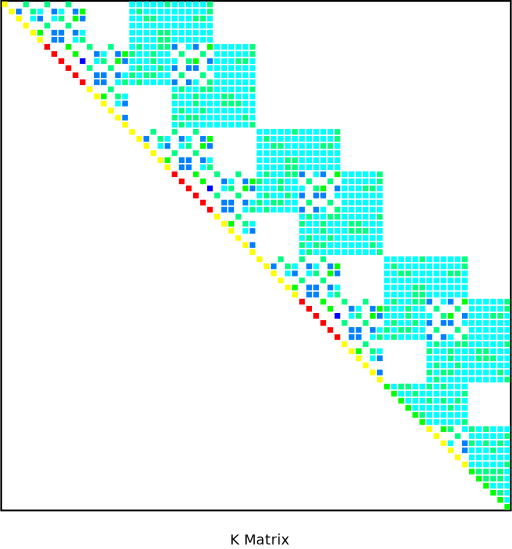

PSMAT, Fname, Ext, Matrix, Color
Writes an assembled global matrix to a postscript format
that graphically displays nonzero matrix values.
FnameFile name and directory path (248 characters maximum, including the characters needed for the directory path). An unspecified directory path defaults to the working directory; in this case, you can use all 248 characters for the file name.
This file name is used for the postscript file name. It defaults to the current Jobname if left blank.
ExtFilename extension (eight-character maximum).
Defaults to .PS if left blank.
MatrixSpecify which matrix to write to the output postscript file:
STIFF | — | Write stiffness matrix to output postscript file. Valid for all types of analyses that write a .FULL file. |
MASS | — | Write mass matrix to output postscript file. Valid for buckling, substructure, and modal analyses. If the .FULL file was generated in a buckling analysis, then this label will write the stress stiffening matrix to the output postscript file. |
DAMP | — | Write damping matrix to output postscript file. Only valid for damped modal analyses. |
ColorSpecifies whether to display the grid in black and white or in color:
BLACK | — | Each nonzero coefficient is symbolized by a black square (default). |
COLOR | — | Each nonzero coefficient is symbolized by a colored square. The color depends on the module of the coefficient; the range is from blue for the smallest values to red for the largest values. The color map is:
|
This command is used to copy a matrix from the assembled global
matrix file (.FULL file) as specified on the FILE command and write it in a postscript format to a new
file named Fname.Ext (defaults to Jobname.PS). The matrix is symbolized
by a grid in which the black or colored squares represent the nonzero
coefficients of the matrix. The .FULL file must
be available for this command to work properly.
If the matrix is large, it may be difficult to display the postscript
file. In this case, use Color = BLACK to
reduce the postscript file size.
The assembled global matrix file is created during solution depending on the analysis type, equation solver, and other solution options. By default, the assembled global matrix file is never deleted at the end of solution. For most analysis types, the Sparse direct solver and the ICCG solver write a .FULL file. All mode extraction methods used for buckling and modal analyses write a properly formatted .FULL file to be used with the PSMAT command.
When copying the stiffness matrix for transient and harmonic analyses, be aware that the element mass matrix values (and possibly element damping matrix values) are incorporated into the globally assembled stiffness matrix. Thus, the globally assembled stiffness matrix represents more than the stiffness of the model for these analysis types. Please refer to the Mechanical APDL Theory Reference for more details.
The PSMAT command is not able to display a lumped mass matrix from a .FULL file generated by a harmonic analysis.
When copying a .FULL file, the rows and columns corresponding to specified constraints (e.g., D commands) are eliminated from the system of equations and therefore are not written to the .PS file. In addition, rows and columns corresponding to eliminated (slave) degrees of freedom from coupling and/or constraint equations (e.g., CE, CP commands) are eliminated from the system of equations and are not written to the .PS file. The DOFs that are eliminated from any coupling and/or constraint equations are determined internally by the solution code and may not match what you specified via the CE/CP (or similar) commands.
When copying a .FULL file, only the upper triangular part of the matrix will be written to the .PS file if the matrix is symmetric; the full matrix is written if the matrix is unsymmetric. Only matrix coefficients that are greater than zero will be written.
The WRFULL command, in conjunction with the SOLVE command, can be used to generate the assembled global matrix file and eliminate the equation solution process and results output process.
The following command sequence shows typical usage of this command.
/BATCH,LIST /AUX2 ! Enter AUX2 processor FILE,job1,full ! FULL file containing stiffness matrix is job1.full PSMAT,job1KColor,ps,STIFF,COLOR ! Create file job1KColor.ps in color ! postscript format for stiffness matrix PSMAT,job1MBlack,,STIFF,BLACK ! Create file job1MBalck.ps in black/white ! postscript format for stiffness matrix FINISH
Below is an example of an export of the stiffness matrix to a postscript format using the COLOR option.
